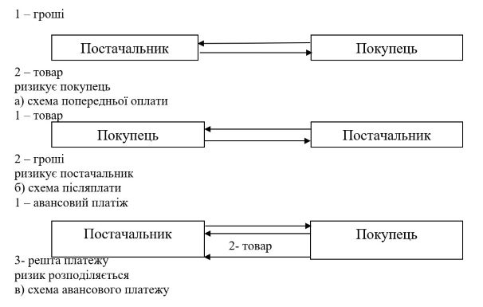

План
1. Зміст, види та способи розрахунків підприємства.
2. Форми грошових розрахунків.
3. Принципи організації грошових розрахунків.
1. Зміст, види та способи розрахунків підприємства
Суб’єкти господарювання в процесі своєї діяльності здійснюють грошові розрахунки з іншими підприємствами, установами, організаціями та фізичними особами. Ці розрахунки пов’язані з оплатою придбаних товарів, виконаних робіт, наданих послуг, перерахуванням податків та платежів, виплатою заробітної плати, пенсій тощо.
Розрахунки - це спосіб взаємодії суб'єктів господарювання в процесі реалізації, розподілу та перерозподілу суспільного продукту на засадах чинного законодавства країни.
Розрахунками в народній економіці називається система грошових відносин, пов'язаних з оплатою товарів, послуг і виконанням інших фінансово-кредитних зобов'язань підприємств, організацій, населення.
Розрахунки і платежі здійснюються за допомогою грошових коштів.
Грошові кошти - це готівка, кошти на рахунках у банках та депозити до запитання.
Грошові кошти є найбільш ліквідними активами. Вони присутні на початковому та кінцевому етапах облікового циклу, який включає придбання товарів, виробництво продукції, виконання робіт, надання послуг, а також їх продаж і отримання виручки. Інформацію про рух грошових коштів на підприємстві відображає форма №3 "Звіт про рух грошових коштів". До грошових коштів належать: касова готівка; кошти на рахунках у банку; інші кошти, які відповідають визначенню грошових коштів.
У загальній грошовій масі розрізняють активні кошти, що в кожний момент беруть участь в обороті, і пасивні (кошти на рахунках суб'єктів господарювання, громадських організацій, кошти населення, інші фонди накопичення і зберігання), що є лише потенційним платіжним засобом. Отже, маса грошей, яка перебуває в обороті, завжди буде меншою за загальну кількість грошей на суму грошових фондів накопичення і зберігання. Останні постійно залучаються в активний грошовий оборот.
Грошові розрахунки - сукупність платежів суб'єктів господарювання за реалізовану продукцію, виконані роботи, надані послуги та за операції, які не пов'язані з реалізацією продукції.
Основним способом здійснення розрахунків між будь-якими контрагентами є переказ грошей.
Переказ грошей - рух певної суми грошей з метою їх зарахування на рахунок отримувача або видачі йому в готівковій формі. Він може здійснюватися трьома способами: попередня оплата, авансовий платіж, після плата (рис. 2).
2. Форми грошових розрахунків
Вільні грошові кошти підприємств повинні обов'язково зберігатися в банку. Готівку, необхідну для забезпечення господарської діяльності, підприємства зберігають у своїх касах. Частина грошових коштів видається під звіт співробітникам підприємства для витрат, що виникають у зв'язку з виконанням доручень адміністрації підприємства.
Розрахунки між підприємствами і організаціями здійснюються як правило без участі готівки, шляхом перерахування коштів з рахунку в банку свого підприємства на відповідні рахунки інших підприємств. Це виключає використання в розрахунках готівки і пов'язаних з ними витрат на охорону, транспортування, але не виключає самої готівки з розрахункових операцій.
Грошові розрахунки здійснюються за такими формами:
1. Готівкова - платежі готівкою підприємств (підприємців) та фізичних осіб за реалізовану продукцію (товари, виконані роботи, надані послуги), а також за операціями, які безпосередньо не пов’язані з реалізацією продукції (товарів, робіт, послуг) та іншого майна.
Готівкові розрахунки - це сукупність матеріальних цінностей у вигляді готівки, які перебувають у розпорядженні підприємства для забезпечення його поточної фінансово-господарської діяльності.
Підприємства здійснюють розрахунки готівкою між собою і з фізичними особами (громадянами України, іноземцями, особами без громадянства, які не провадять підприємницької діяльності) через касу як за рахунок готівкової виручки, так і за рахунок коштів, одержаних із банків. Зазначені розрахунки проводяться також шляхом переказу готівки для сплати відповідних платежів. Підприємства ведуть облік операцій з готівкою у відповідних книгах обліку.
Уся готівка, що надходить до кас, має своєчасно (у день одержання готівкових коштів) та в повній сумі оприбутковуватися. Через потребу прискорення обігу готівкових коштів і своєчасного їх надходження до кас банків для підприємств, що здійснюють операції з готівкою в національній валюті, установлюють ліміт каси та строки здавання готівкової виручки (готівки).
Підприємства можуть тримати в позаробочий час у своїх касах готівкову виручку (готівку) у межах, що не перевищують установлений ліміт каси. Готівкова виручка (готівка), що перевищує встановлений ліміт каси, обов’язково здається до банків для її зарахування на банківські рахунки. Відокремлені підрозділи підприємств-юридичних осіб можуть здавати готівкову виручку (готівку) безпосередньо до кас таких юридичних осіб або до будь-якого банку для її переказу і зарахування на банківські рахунки зазначених юридичних осіб.
Здавання готівкової виручки (готівки) здійснюється самостійно (також зі застосуванням платіжних пристроїв та через пункти приймання готівки) або через відповідні служби, яким законодавством надано право на перевезення валютних цінностей та інкасацію коштів. Здавання готівкової виручки (готівки) може здійснюватися для зарахування на будь-який банківський рахунок підприємства (підприємця) на його вибір.
Готівкова виручка (готівка) підприємств, зокрема одержана з банку, використовується ними для забезпечення потреб, що виникають у процесі їх функціонування, а також для проведення розрахунків з бюджетами та державними цільовими фондами за податками і зборами (обов’язковими платежами).
Підприємства не повинні накопичувати готівкову виручку (готівку) у своїх касах понад установлений ліміт каси для здійснення потрібних витрат до настання строків цих виплат. Підприємства мають право зберігати у своїй касі готівку, одержану в банку для виплат, віднесених до фонду оплати праці, а також пенсій, стипендій, дивідендів (доходу), понад установлений ліміт каси протягом трьох робочих днів, включно з днем одержання готівки в банку.
Видача готівкових коштів під звіт на закупівлю сільськогосподарської продукції та заготівлю вторинної сировини, крім металобрухту, дозволяється на строк не більше 10 робочих днів від дня видачі готівкових коштів під звіт, а на всі інші виробничі (господарські) потреби на строк не більше двох робочих днів, включно з днем отримання готівкових коштів під звіт.
Підприємства під час здійснення розрахунків зі споживачами за готівку зобов’язані приймати у сплату за продукцію (товари, роботи, послуги) без обмежень банкноти і монети (зокрема розмінні, обігові, пам’ятні монети, зношені, значно зношені банкноти та монети) усіх номіналів, які випускає Національний банк України в обіг, що є дійсними платіжними засобами і не викликають сумніву в їх справжності та платіжності. Крім того, підприємства мають забезпечувати наявність у касі банкнот і монет для видачі решти.
2. Безготівкова - це перерахування певної суми коштів з рахунків платників на рахунки отримувачів коштів, а також перерахування банками за дорученням підприємств і фізичних осіб коштів, унесених ними готівкою в касу банку, на рахунки отримувачів коштів. Ці розрахунки проводяться банком на підставі розрахункових документів на паперових носіях чи в електронному вигляді. Банк виконує розрахункові документи відповідно до черговості їх надходження та виключно в межах залишку коштів на рахунку клієнта. Якщо до банку надійшло одночасно кілька розрахункових документів, на підставі яких здійснюється списання коштів, то вони виконуються в такій черговості:
- у першу чергу списуються кошти на підставі рішення суду для задоволення вимог про відшкодування шкоди, завданої каліцтвом, іншим ушкодженням здоров’я або смертю, а також вимог про стягнення аліментів;
- у другу - списуються кошти на підставі рішення суду для розрахунків щодо виплати вихідної допомоги та оплати праці особам, які працюють за трудовим договором (контрактом), а також виплати за авторським договором;
- у третю - списуються кошти на підставі інших рішень суду;
- у четверту - списуються кошти за розрахунковими документами, що передбачають платежі до бюджету;
- у п’яту - списуються кошти за іншими розрахунковими документами в порядку їх послідовного надходження.
Безготівкові розрахунки - це грошові розрахунки, які здійснюються за допомогою записів на рахунках у банках, коли гроші списуються з рахунка платника і переказуються на рахунок отримувача коштів.
Безготівкові розрахунки в національній валюті на території України здійснюються на основі Інструкції про безготівкові розрахунки в Україні в національній валюті № 22 від 21.01.2004 р.
Між обігом готівкових і безготівкових коштів існує тісний зв'язок. Так, безготівкові кошти підприємств конвертуються в готівку при передачі заробітної плати працівникам. Останні обмінюють одержану зарплату в підприємствах торгівлі та сфери побуту на товари і послуги. Після цього виручка, одержана в касі підприємств, знову надходить на їх поточні рахунки і далі рухається у безготівковій формі.
3. Товарна (бартерна) - здійснюється обмін певної кількості товарів (робіт, послуг) на еквівалентну за вартістю кількість іншого товару без проведення грошових розрахунків.
3. Принципи організації грошових розрахунків
Для створення ефективної системи безготівкових розрахунків особливе значення має правильне визначення її принципів – основних нормативних положень, які визначають конкретний економічний зміст способів і форм розрахунків. Недотримання принципів організації безготівкових розрахунків призводить до кризи всієї системи розрахунків (платіжної кризи).
Організація грошових розрахунків ґрунтується на наступних принципах:
1. Обов'язкове зберігання грошових коштів на рахунках у банку (за винятком перехідних залишків у касі).
2. Вільний вибір установи банку для відкриття поточних рахунків - підприємствам надано право вибору установи банку для відкриття рахунків усіх видів (основного й додаткового) за згодою банку.
3. Вільний вибір способів розрахунків і платежів - принцип самостійного (без участі банків) вибору підприємствами форми розрахунків та закріплення їх.
Весь платіжний оборот підприємств (безготівковий і готівковий) поділяється на дві частини: розрахунки за товарними операціями і розрахунки за нетоварними операціями.
Розрахунки за товарними операціями - це взаємні розрахунки підприємств за товарно-матеріальні цінності, виконані роботи, надані послуги. Вони є переважними, бо визначають характер і зміст роботи фінансової служби підприємства у сфері розрахунків. Від безперебійності та планомірності організації розрахунків за товарними операціями вирішальною мірою залежить стан усіх розрахунків підприємства, його фінансовий стан.
До другої частини платіжного обороту належить велика група платежів нетоварного характеру, які відбуваються, головним чином, у зв'язку з виконанням усіляких фінансових зобов'язань підприємств. Такі платежі бувають між:
- підприємством та органами загальнодержавних фінансів (платежі підприємства до бюджету з прибутку, оплата податку на додану вартість, акцизного збору, платежі до загальнодержавних цільових грошових фондів, інші податкові та неподаткові платежі на користь держави);
- підприємством і комерційними банками (одержання та повернення кредитів, сплата процентів за користування ними, оплата інших банківських послуг);
- підприємством і його вищим органом або його засновниками - юридичними особами (платежі коштів на створення централізованих фондів, одержання коштів із цих фондів, договорах та угодах. Установи банків можуть тільки пропонувати своїм клієнтам застосовувати ту чи іншу форму розрахунків, ураховуючи специфіку діяльності та конкретні умови, які можуть скластися в процесі розрахунків.
4. Списання коштів за дорученням власника рахунку - кошти з рахунка підприємства списуються за розпорядженням його власника. Ураховуючи можливість відкриття кількох рахунків, суб'єкт підприємницької діяльності визначає один з рахунків як основний.
5. Здійснення платежів у межах наявних на рахунку коштів - платежі здійснюються в межах залишків коштів на рахунках платника або в межах наданого банківського кредиту.
6. Дотримання установлених законодавством правил - поточні рахунки підприємствам - суб'єктам підприємницької діяльності відкривають установи банків тільки за умови повідомлення про це податкового органу.
7. Термінове здійснення платежів - момент здійснення платежу має бути максимально наближеним до часу відвантаження товарів, виконання робіт, надання послуг.
8. Розрахунки між суб'єктами підприємницької діяльності можуть здійснюватися готівкою. При цьому постачальник - отримувач коштів повинен суму отриманої готівки провести через касову книгу і повернути її в повному обсязі на свій рахунок у банк. Використання готівки, пов'язане з виплатою заробітної плати, премій, винагород, матеріальної допомоги, дивідендів, провадиться тільки через її отримання з кас банків. Такий порядок дає змогу контролювати своєчасну сплату податків, внесків та інших обов'язкових платежів, розмір яких залежить від фонду оплати праці.
Питання для самоконтролю:
1. Поясніть сутність розрахунків у діяльності підприємства.
2. Наведіть види грошових розрахунків підприємства.
3. Які Ви знаєте способи розрахунків?
4. Охарактеризуйте порядок здійснення готівкових розрахунків у фінансово-господарській діяльності підприємства.
5. Розкрийте особливості здійснення безготівкових розрахунків у фінансово-господарській діяльності підприємства.
6. Визначте основні принципи організації розрахунків підприємства.
Література:
1. Аранчій В.І. Фінанси підприємства: навчальний посібник / В.І. Аранчій, В.Д. Чумак, Л.В. Бражник. – Полтава: РВ ПДАА, 2018., с. 35-41.